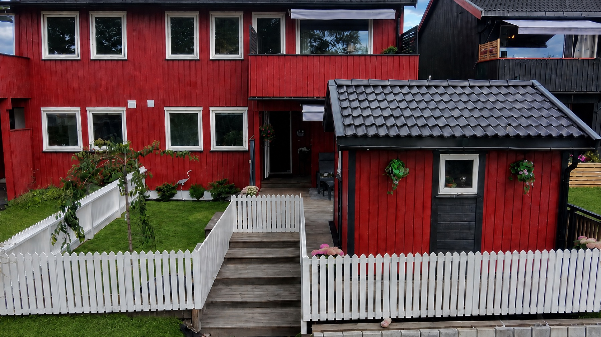

Halvpart av tomannsbolig · Skien
Røyvegen 136
Et innholdsrikt hjem over to fulle etasjer – gjennomgående oppgradert med smarte løsninger og mange uteplasser.
Velkommen hjem
Moderne komfort.
Personlig uttrykk.
Boligen er oppgradert i perioden 2023–2026 og kombinerer lune materialer, helhetlige fargevalg og moderne tekniske løsninger.
Underetasjen inneholder vindfang, entré, to soverom, bad, vaskerom og bod. Hovedetasjen rommer stue og kjøkken, toalettrom og soverom. I tillegg følger en vinterisolert, frittstående bod og en helårspaviljong.
Kjøkken, bad, toalettrom og alle overflater er fornyet. Omtrent 95 % av det elektriske anlegget og 99 % av VVS-anlegget er nytt i perioden 2023–2026. Arbeid på badet er utført av fagfolk med dokumentasjon i Boligmappa.no.
Flere soner ute
Uteområder for hele dagen
Stor, delvis overbygd platting ved inngangen, balkong fra stuen og terrasse fra kjøkkenet med helårspaviljong. Tomten har både plen og naturtomt og er inngjerdet – praktisk for hundehold.
Terrasser og trapper er oppgradert i 2023–2026 med grå, rillede terrassebord fra Møre Royal, nye levegger, rekkverk, markiser og dimbare LED-striper.
- Stor utvendig trapp mellom etasjene
- Tre plassbygde putekasser
- 20 meter tilkoblet vannslange
- Utestikk på flere nivåer
Stue og spisestue
Åpent, lunt og sosialt
Stue, spisestue og kjøkken bindes sammen av slette malte flater, laminatgulv og listeløs overgang mellom tak og vegg. Nytt trapperekkverk med innslag av tre gir et tydelig arkitektonisk element.
Detaljene er gjennomførte med sorte Elko Plus-brytere og stikk, appstyrt Philips Hue-lampe over spiseplassen og gulvlister i heltre eik. Overflatene er fra 2023.
- Romslig spiseplass
- Utgang til balkong
- Listeløse overganger
- Appstyrt belysning
Systemkjøkken · 2023
Påkostet kjøkken med smarte valg
Kjøkkenet har malte, slette fronter og kompositt benkeplater. En romslig halvøy samler Elica NikolaTesla One platetopp og integrert ventilator i en elegant løsning.
Underlimt komposittvask, integrerte hvitevarer, komfyrvakt, automatisk vannstopper og avfallssortering gir en praktisk hverdag. Spileveggen mellom skapene fikk Philips Hue LED-belysning i 2026.
- Integrerte hvitevarer
- 85 cm platetopp med ventilator
- Kompositt benkeplate og vask
- Automatisk vannstopper
Underetasjen · 2023
Stort soverom med skreddersydd oppbevaring
Et romslig soverom med hvitfoliert takpanel, slette vegger, laminat og varmefolie. Garderobeløsningen fra Systemkjøkken har plassbygde eikehyller og Philips Hue-belysning.
- Varmefolie i gulv
- Dimbare spotter
- Opplegg for stor TV
- Sort Elko Plus
Fleksibelt rom · 2026
Soverom, kontor eller gamingrom
Et fleksibelt rom med egen inngang, nymalte overflater og moderne spilevegg. Philips Hue LED-stripe og Namron panelovn kan styres fra app.
- Egen inngang
- Nymalt i 2026
- Appstyrt lys
- Appstyrt varme
Hovedetasjen · 2023
Soverom med god garderobeplass
Soverommet har hvitfoliert takpanel, slette malte vegger og laminatgulv. En stor garderobe med skyvedører gir effektiv oppbevaring.
- Skyvedørsgarderobe
- Laminatgulv
- Slette overflater
- Oppgradert i 2023
Nyetablert i 2024
Bad med velværefølelse
Badet i underetasjen ble etablert med nye bunnledninger, sluk, vannrør og overflater. Store fliser, dusjnisje med slukrenne, vegghengt toalett og boblekar gir et eksklusivt uttrykk.
Boblekaret har vannvarmer, massasje og bobler. Fusion-stereo med Bluetooth og fire innfelte høyttalere gir lyd i hele rommet. Alt arbeid er utført av fagfolk.
- Boblekar med massasjesystem
- Gulvvarme
- Fusion lydanlegg
- To automatiske avtrekksvifter
Toalettrom · 2023
Et lite rom med stort særpreg
Vegghengt toalett, servant og armatur i sort utførelse kombineres med ekte eikespiler i det sorte taket. Varmefolie, dimbare spotter, belyst speil og Pax Calima automatisk vifte gir komfort og funksjon.
- Ekte eikespiler
- Vegghengt toalett
- Varmefolie
- Sort Elko Plus
Entré og vindfang
En gjennomført velkomst
Entréen har hvitfoliert takpanel, slette malte vegger, laminatgulv og dimbare LED-spotter. Trappen fikk nytt rekkverk og laminat i trinnene i 2023, samtidig som alle innvendige dører ble skiftet.
- Nytt rekkverk
- LED-spotter med dimmer
- Nye innerdører
- Overflater fra 2023
Teknisk oppgradert
Vaskerom og tekniske løsninger
Vaskerommet har flislagt gulv med varme og baderomsplater. Her står ny 300 liters varmtvannstank fra 2024 og boligens vannfordelingsskap.
Varmtvannstank og vaskemaskin har separate 16 ampere kurser. Hovedstoppekranen kan fjernstyres via boligens automatiske vannstopper. Omtrent 95 % av det elektriske anlegget og 99 % av VVS-anlegget er fornyet i perioden 2023–2026; kun sluket på vaskerommet er fra byggeåret.
Vinduer og balkongdører har trelags glass og utvendig aluminiumsbeslag fra 2015. Ytterdørene og den utvendige taktekkingen er også fra 2015.
- 300 liters varmtvannstank
- Vannfordelingsskap
- Fjernstyrt hovedstoppekran
- Trelags glass fra 2015
8 m² BRA-e · Bygget 2024
Vinterisolert bod med mange muligheter
Den frittstående boden er isolert i gulv, tak og vegger og har tolags isolerglass, isolert dør og innlagt strøm. I dag brukes den som verksted, men den kan også fungere som hjemmekontor eller hobbyrom.
- Helårsisolert
- Arbeidsbenk fra Systemkjøkken
- Appstyrt lys og varme
- Mange stikkontakter
Røyvegen 136 · Skien